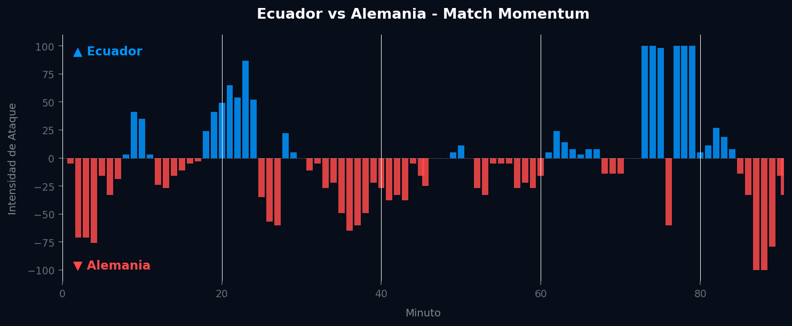
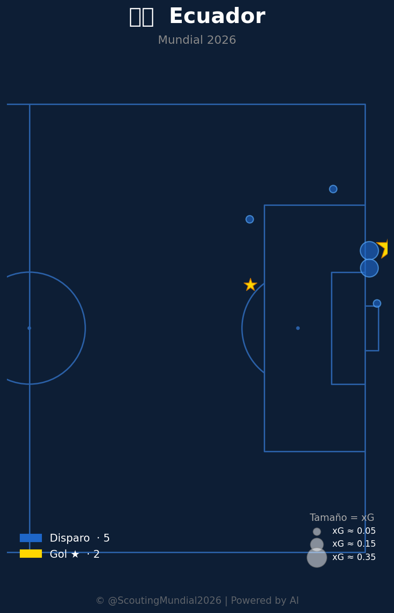
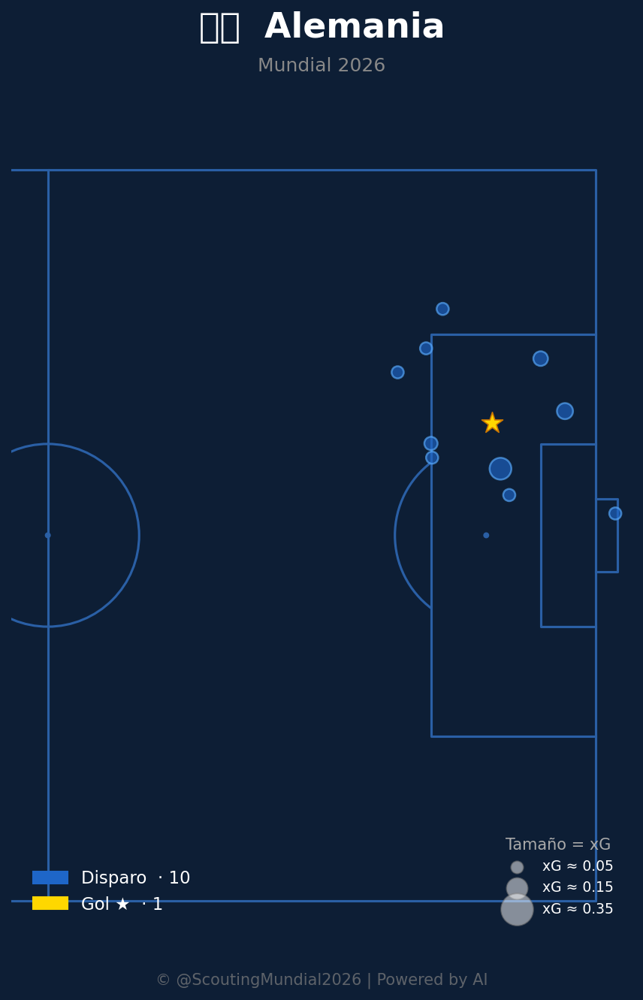

Grupo E
 Alemania
Alemania
Ecuador vs Alemania
📅 2026-06-25 · 🕒 20:00 (Local)
Ecuador

2 - 1
FINALIZADO
Alemania
📅 2026-06-25 · 🕒 20:00 (Local)
Alemania
El encuentro entre Ecuador y Alemania, correspondiente a la última jornada del Grupo E del Mundial 2026, fue un vibrante choque de estilos que culminó con una sorprendente victoria sudamericana por 2-1. Alemania, fiel a su ADN, intentó imponer su ritmo con una posesión dominante y una búsqueda constante de la portería rival, pero se encontró con una Ecuador férrea y tácticamente disciplinada. El primer gol del partido llegó al minuto 34, cuando Enner Valencia, con una jugada individual de pura potencia, batió al portero alemán, capitalizando una de las pocas incursiones ofensivas ecuatorianas de la primera mitad. Alemania, lejos de desanimarse, respondió con una presión asfixiante y encontró el empate en el minuto 61 gracias a un remate certero de Jamal Musiala tras una combinación rápida. Sin embargo, el ímpetu alemán fue cortado en seco cuando, en el minuto 73, Moisés Caicedo anotó el gol de la victoria para Ecuador, culminando una rápida transición que desarticuló la zaga germana y selló un triunfo histórico.
El análisis del Match Momentum revela una dinámica fascinante del partido. Alemania dominó la intensidad de ataque durante el 56.5% del encuentro, reflejando su control habitual de la posesión y la iniciativa. Sin embargo, la eficiencia de Ecuador fue letal. Aunque dominaron solo el 35.9% del partido en intensidad ofensiva, sus picos fueron decisivos. La intensidad máxima de Ecuador se registró en el minuto 73' (100.00), coincidiendo de manera directa con el gol de Moisés Caicedo que otorgó la ventaja definitiva. Este fue un momento de brillantez táctica y ejecución clínica, donde el equipo sudamericano capitalizó su oportunidad de forma contundente. Por otro lado, la intensidad máxima de Alemania se alcanzó en el minuto 87' (100.00), lo que indica una reacción desesperada y tardía para intentar rescatar el partido, pero ya era demasiado tarde. El Match Point del encuentro fue innegablemente el minuto 73'. El gol de Caicedo no solo selló la victoria de Ecuador, sino que también desinfló la moral alemana, obligándoles a un ataque final que, a pesar de su vehemencia, careció de la precisión necesaria para revertir el marcador.

El planteamiento táctico de Ecuador, bajo un esquema presumiblemente 4-4-2 con fases, fue una lección de pragmatismo y resiliencia. El equipo sudamericano priorizó la solidez defensiva, formando dos líneas compactas que cerraron los espacios interiores y forzaron a Alemania a buscar el juego por las bandas, donde sus centros fueron interceptados con regularidad. El mediocampo, liderado por la incansable labor de Moisés Caicedo, fue clave en la recuperación de balones y en la anulación de la creatividad alemana en la zona central. Ecuador no sufrió en exceso por la falta de posesión, sino que la aceptó como parte de su estrategia, buscando transiciones rápidas y verticales, aprovechando la velocidad de sus extremos y la potencia de su delantero para generar peligro en momentos clave. La capacidad de capitalizar sus oportunidades limitadas fue el pilar de su éxito.
Alemania, por su parte, se presentó con su tradicional 4-3-3 de alta posesión, buscando dominar el esférico y el ritmo del partido. Sus virtudes radicaron en la fluidez de su circulación de balón y la capacidad de sus mediocampistas para encontrar espacios entre líneas. Sin embargo, su principal falla fue la vulnerabilidad defensiva en las transiciones rápidas tras pérdida, dejando amplios espacios a la espalda de sus laterales que Ecuador supo explotar con efectividad. El bloque defensivo alemán, a menudo adelantado para presionar la salida del rival, se vio expuesto ante la velocidad de los contraataques ecuatorianos. A pesar de controlar gran parte del juego en términos de posesión e intensidad, la falta de una definición contundente en el último tercio y la incapacidad para adaptarse rápidamente a la amenaza de los contragolpes fueron los factores decisivos en su derrota.
El duelo táctico fue un claro contraste entre la propuesta dominante y de control de Alemania y la eficacia pragmática de Ecuador. Mientras los alemanes intentaron someter a su rival a través de la posesión y el volumen de ataque, Ecuador demostró que en el fútbol de élite, la capacidad de capitalizar los momentos críticos puede ser más valiosa que el dominio estadístico. La gestión de los picos de intensidad fue clave: Ecuador golpeó en su momento de máxima energía para asegurar la ventaja, mientras que Alemania llegó a su cenit de presión de manera reactiva y sin el tiempo suficiente para cambiar el resultado. El veredicto final es que el marcador de 2-1, aunque estrecho, es un reflejo justo de un partido donde Ecuador, a pesar de una menor cuota de protagonismo, fue el equipo más efectivo y tácticamente astuto en los momentos cruciales, mereciendo plenamente su victoria y la clasificación como líder de grupo.



